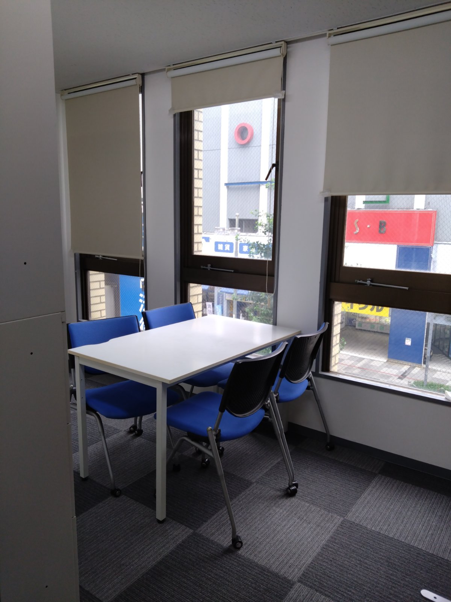

ダイアモンド相談事業所
「誰かに相談してもいいのかな？」
障がいのある方やそのご家族が、安心して日常生活を送るための支援を行う、地域の身近な窓口です。生活・就労・子育て・教育・人間関係など、多岐にわたるご相談を、経験豊富な相談員が一緒に考え、支援につなげます。

相談支援の内容
お子さまから大人の方まで、幅広くご相談いただけます。
計画相談支援
障害福祉サービスを利用する際の「サービス等利用計画」の作成と、利用開始後の定期的なモニタリング（見直し）を行います。
障害児相談支援
児童発達支援や放課後等デイサービスなど、お子さまが利用する通所支援の計画づくりをサポートします。
こんな時にご利用ください
障がいのある方やそのご家族が、仕事・生活・将来のことで困ったときに気軽に相談できる場所です。
児童（子ども）の支援
発達の遅れや行動の不安がある／就学先や学校生活での支援が必要／児童福祉サービスの情報が知りたい
障がい福祉サービス
障がい福祉サービスを使いたいけど手続きが不安／サービス等利用計画を作成してほしい（特定相談支援）
生活・子育て
育児のストレスや不安を誰かに聞いてほしい／家庭内の人間関係がうまくいかない
就労・キャリア
働くことに不安がある／就労移行支援事業所や制度について知りたい
その他・総合的な悩み
どこに相談すればよいか分からない／複数の問題が重なっていて混乱している
3つの特徴
安心の体制
国家資格を持つ専門相談員が常駐し、丁寧なヒアリングと柔軟な対応を行います。
ライフステージ対応
子どもから大人、高齢者まで。人生のさまざまなタイミングで支援が可能です。
法的サービス対応
特定相談支援事業所として、サービス等利用計画の作成・モニタリングも実施します。
ご利用の流れ
1
お問い合わせ
お電話・メールでご連絡ください
2
面談
ご本人・ご家族の状況やご希望を伺います
3
計画案の作成
サービス等利用計画案をまとめます
4
サービス開始
支給決定を経てサービスを開始します
5
モニタリング
定期的に状況を確認し、計画を見直します
人員配置
ダイアモンド相談事業所では、「強度行動障害（実践）研修」修了者を常勤配置しています。
対象となる方
障害福祉サービスの利用を考えている方、障害のあるお子さまの保護者の方。サービスを利用するかどうか迷っている段階でも、まずはお気軽にご相談ください。
よくある質問
Q. 相談だけでも利用できますか？
A. もちろんです。サービスを利用するか迷っている段階でも、まずはお話をお聞かせください。
Q. 費用はかかりますか？
A. 計画相談支援・障害児相談支援は、原則として利用者負担はありません。
Q. どこに住んでいても利用できますか？
A. 相模原市を中心にご相談を承っています。まずはお問い合わせください。
まずはお気軽にご相談ください。
お電話・メールでお待ちしています。
事業所番号
ダイアモンド相談事業所
計画相談支援 1432609319
障害児相談支援 1472600525
障害児相談支援 1472600525
事業所番号 1412607820
事業所番号 1412607820